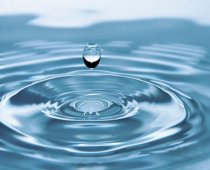

Projects
->Fish Classification
This is a project that mainly deals in classifying fishes according to its biological appearance. This visionary
initiative underscores the significance of sustainable fishing
practices, ecosystem rejuvenation, the establishment of marine
reserves, and the conservation of endangered species.
METHODOLOGY
-Technological Setup and Implementation
Needs Assessment and Planning
Software and Hardware Procurement
Data Management System Development
Technology Integration and Testing
-Monitoring, Evaluation, and Future Sustainability
Sustainability Planning and Community
Engagement
Future enhancement optimization
System Maintenance and Updates
TECHNOLOGIES USED
i) Transfer learning using mobile net version 2
ii) Neural Network
iii) Geographic Information System
iv) OpenCV
v) TensorFlow
This is a group project and the team members are Mugesh Raj and Shaik Yasir Tawfiq.

Diabetic retinopathy (die-uh-BET-ik ret-ih-NOP-uh-thee) is a diabetes complication that affects eyes.
It's caused by damage to the blood vessels of the light-sensitive tissue at the back of the eye (retina).
This project maily focuses on identifying the case and classify if the patient has the disease or not. We use OpenCV technique to classify the images accordingly.
This is my personal project which is guided by Prof.Mrs.Sornalakshmi(SRM University).
-WORKING
i) We get the images from the patient
ii) The image of the retina is then used for analysing with the help of cross validation method
iii) Images are later on conveterd into gray background as the model will analyse the white coloured pigmentation to predict the stage of infection
iv) Now the patient and the doctor will have a clear view on what steps to take to cure the infection.

This project has proposed a deep learning-based neural network-based solution to improve the quality of water and its potability.
With the help of a neural network, we can monitor the changing potable level. We have also extensively investigated the implications of changing the pH.
Optimal pH was considered for performance comparison and subsequent investigation.
Some of the machine learning and deep learning techniques that have been applied for water quality prediction include
i) Support vector machines (SVM)
ii) Decision trees (DT)
iii) Random forests (RF)
iv) Gradient boosting (GB)
v) AdaBoost
vi) Artificial neural networks (ANN)
vii) Long short-term memory (LSTM)
This is a group project that is completed with the help of Prof.Dr.A.V.Kalpana(SRM University) and Mugesh Raj.